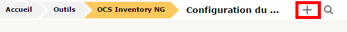
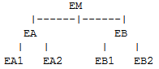
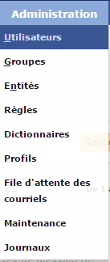

Avant de débuter
Légende :
[entre crochets] = argument à personnaliser
Police_console_verte = commande à taper
Police_console_violette = en mode texte (nano par exemple)
Les fonctionnalités d'OCS
OCS Inventory NG est un outil qui permet de réaliser un inventaire sur la configuration matérielle des machines du réseau et sur les logiciels qui y sont installés. OCS permet de visualiser cet inventaire grâce à une interface web. Il comporte également la possibilité de télé-déployer des applications sur un ensemble de machines. Une fonction des agents nommée IpDiscover permet de connaître l'intégralité des interfaces du réseau.
Les agents doivent être installés sur les machines clientes.
Les communications entre agents et serveurs de gestion utilisent les protocoles HTTP/HTTPS. Les données sont formatées en XML et compressées avec Zlib pour réduire l'utilisation de la bande passante du réseau.
Grâce à la fonctionnalité de découverte IP, OCS peut découvrir tous les matériels connectés au réseau, même ceux pour lesquels aucun agent n'est installé (imprimantes réseaux, commutateurs, routeurs, etc.).
Collecteur de données sur les matériels / logiciels -> testé OK
Télédiffusion, installation d'applications et exécution de commandes sur les clients -> en cours de test ...
Découverte réseau par IPDiscover via ARP, ou par SNMP (switch, routeur, imprimante, onduleur ...) -> testé OK : découverte de l'onduleur, imprimante, postes windows mais pas des switchs et routeurs
GLPI est un logiciel et gestion de parc informatique qui intègre des fonctions d’inventaire informatique, de gestion de service assistance. C’est une application Full Web qui permet de gérer l’ensemble des problématiques de gestion de parc informatique : de la gestion de l’inventaire des composantes matérielles ou logicielles d’un parc informatique à la gestion de l’assistance aux utilisateurs.
Il s’interface avec OCS pour centraliser et organiser les données récupérées par ce dernier.
Le serveur GLPI s'appuie sur le serveur OCS pour la remontée automatisée des éléments
Gestion d'inventaire complet -> testé OK pour le premier premier point
Affectation du matériel par zone géographique (salle), par groupes d’utilisateurs et par utilisateurs
Gestion des états de matériel
Gestion des consommables
Gestion du cycle de vie de chaque élément
Gestion des licences (acquises, à acquérir, ...) et des dates d’expiration
Extraction de l'inventaire -> testé OK extraction au format .slk (visualisable par excel)
Gestion des informations commerciales et financières
achat
garantie
amortissement
Gestion et suivi des demandes d’intervention et des tickets d'incident (helpdesk)
Gestion des fournisseurs, contrats, documents liés aux éléments d’inventaires…
Gestion de la documentation informatique (base de connaissance, FAQ, ...)
Rapports et statistiques (nombres d'intervention, coût des consommables, ...)
Objectifs :
Inventaire des ordinateurs :
Micro-ordinateur (marque, modèle, numéro de série)
Processeur (nombre de cœurs et fréquence)
Mémoire vive (quantité et fréquence)
Disque dur (capacité et partitionnement)
Carte graphique (fréquence processeur et mémoire)
Ecran (marque, modèle, numéro de série)
Inventaire logiciels :
Connaître les systèmes d’exploitation et leurs versions
Connaître les logiciels installés sur chaque micro-ordinateur et leurs versions
numéros de licences des logiciels
Inventaire actif réseau :
Marque, modèle et numéro de série
Switchs
Bornes Wi-Fi
Inventaire imprimantes et copieurs :
Marque, modèle et numéro de série
Capacité papier (A3, A4, enveloppes…)
Couleur ou monochrome
Laser ou jet d’encre
Versions de l’OS / des applications installés :
Linux Ubuntu 16.04.1
Apache 2.4.18
PHP 5.6.29-1
Mysql 5.7.16
OCS 2.3R
GLPI 9.1.1
Avant d’installer OCS, il faut au préalable installer certaines applications nécessaires à son fonctionnement :
sudo add-apt-repository ppa:ondrej/php , taper entrée à la question posée
sudo apt-get update
sudo apt-get install php5.6 php5.6-mysql php5.6-gd php5.6-mbstring php5.6-mysql php5.6-curl php5.6-soap php5.6-dom php-gettext php5.6-mbstring php-xdebug libapache2-mod-php5.6 php5.6-zip php5.6-imap make php5.6-ldap -y
Alterner entre les versions de PHP version de php7.0 vers php5.6 :
sudo a2dismod php7.0 ; sudo a2enmod php5.6 ; sudo service apache2 restart
sudo ln -sfn /usr/bin/php5.6 /etc/alternatives/php
En cas de problème avec PHP : vérifier la version de PHP utilisée : php --version
En cas de problème avec PHP Pour vérifier les liens des versions de PHP
apt-get install apache2 apache2-utils openssl openssl-blacklist openssl-blacklist-extra -y
echo "ServerName [nom du serveur avec suffixe]">> /etc/apache2/sites-available/000-default.conf
echo "AddDefaultCharset utf-8">> /etc/apache2/sites-available/000-default.conf
apt-get install mysql-server -y && service mysql start
Puis compléter le mot de passe de Mysql deux fois de suite :
apt-get install libapache2-mod-perl2 libxml-simple-perl libio-compress-perl libdbi-perl libdbd-mysql-perl libapache-dbi-perl libnet-ip-perl libsoap-lite-perl libproc-daemon-perl libapache2-mod-perl2-dev libphp-pclzip -y
sudo service apache2 restart
Création de la base de donnée d’OCS -> « ocsweb »
mysql -u root -p
mysql> CREATE DATABASE ocsweb ;
mysql> GRANT ALL PRIVILEGES ON ocsweb.* TO 'ocs'@'localhost' IDENTIFIED BY 'ocs' ;
mysql> exit
perl -MCPAN -e shell
Would you like to configure as much as possible automatically? [yes] -> yes
cpan[1]> install CPAN
reload CPAN...
cpan[2]> install YAML
reload YAML...
cpan[3]> install SOAP::Lite
reload SOAP...
cpan[4]> install Apache2::SOAP
Enter ‘q’ to stop search
Please tell me where I can find your apache src
[../apache_x.x/src] -> q
Do you want to install 'xml_pp' (XML pretty printer)? [y] -> taper sur « entrée »
Do you want to install 'xml_grep' (XML grep - grep XML files using XML::Twig's subset of XPath)? [y] -> taper sur « entrée »
Do you want to install 'xml_split' (split big XML files)? [y] -> taper sur « entrée »
Do you want to install 'xml_merge' (merge back files created by xml_split)? [y] -> taper sur « entrée »
Do you want to install 'xml_spellcheck' (spellcheck XML files skipping tags)? [y] -> taper sur « entrée »
cpan[5]> install Archive::Zip
cpan[6]> exit
apt-get install libc6-dev nmap snmp build-essential -y
mkdir -p /home/server/install
cd /home/server/install
wget https://github.com/OCSInventory-NG/OCSInventory-ocsreports/releases/download/2.3RC1/OCSNG_UNIX_SERVER-2.3RC.tar.gz
tar -zxvf OCSNG_UNIX_SERVER-2.3RC.tar.gz
cd OCSNG_UNIX_SERVER-2.3RC/
./setup.sh -> confirmer l’installation d’OCS en tapant sur « Entrée »
Sur chaque question, taper la touche « entrée » (-> réponse par défaut), sauf sur celle-ci :
Sur la question « The script will use the native package from your operating system like apt or rpm
Do you wish to continue il faut taper yes » -> faites « y », faire « entrée » et confirmer à nouveau en faisant « entrée ».
Continuer à taper la touche « entrée » jusqu’à la fin du script.
Fin du script :
a2enconf z-ocsinventory-server && a2enconf ocsinventory-reports && service apache2 reload
cd /var/lib/
chmod 777 ocsinventory-reports/ -> réajuster les droits …
Taper dans un navigateur l’adresse :
http://[adresse_IP_du_nouveau_serveur_OCS]/ocsreports/index.php
Connexion pour la finalisation de l’installation du serveur:
-> root
-> [mot_de_passe_de_Mysql]
-> ocsweb
-> localhost
Attendre 30 secondes …
Cliquer sur "Click here to enter OCS-NG GUI"
Cliquer sur "Perform the update" si cela est affiché
Connexion avec mot de passe OCS par défaut (à rapidement modifier !)
-> admin
-> admin
Pour mettre en Fr : sélectionner le drapeau sur la fenêtre de connexion d'OCS
Page d’accueil d’OCS :
Par sécurité, il faut supprimer install.php :
rm /usr/share/ocsinventory-reports/ocsreports/install.php
Il est possible de supprimer les messages d'alerte dans la console d'administration :
sur l'interface Gui -> configuration / utilisateurs / profils / le profil concerné
-> See warning messages of the GUI -> NO
A savoir : le fichier apache d'OCS : nano /etc/apache2/conf-enabled/z-ocsinventory-server.conf
Avant d’installer GLPI, il faut au préalable ajouter la base de données nécessaires à son fonctionnement :
mysql -u root -p
mysql> CREATE DATABASE glpi ;
mysql> GRANT ALL PRIVILEGES ON glpi.* TO 'glpi'@'localhost' IDENTIFIED BY 'glpi' ;
mysql> exit
cd /home/server/install
wget https://github.com/glpi-project/glpi/releases/download/9.1.1/glpi-9.1.1.tgz
tar xvf glpi-9.1.1.tgz
mv glpi /var/www
chown -R www-data:www-data /var/www/glpi
Créer un nouveau fichier de configuration d'apache pour glpi :
nano /etc/apache2/sites-available/glpi.conf
Ajouter dans ce nouveau fichier :
Alias /glpi /var/www/glpi
<VirtualHost *:80>
ServerName glpi
ServerAlias glpi
DocumentRoot /var/www/glpi
<Directory /var/www/glpi>
Options Indexes FollowSymLinks MultiViews
AllowOverride All
Order allow,deny
allow from all
</Directory>
CustomLog ${APACHE_LOG_DIR}/glpi_access.log combined
ErrorLog ${APACHE_LOG_DIR}/glpi_error.log
</VirtualHost>
Activer le site web :
a2ensite glpi.conf
service apache2 restart
http://[adresse_IP_du_nouveau_serveur_OCS]/glpi
-> français
-> Lire l’ensemble du texte "j'ai lu et j'accepte ..." à tête reposé ;-) -> cliquer sur « continuer »
-> cliquer sur « "installer" »
Vérification de l’environnement de compatibilité pour GLPI :
Etape 1 -> Configuration de la connexion à la base de données : cliquer sur « continuer »
Attendre 30 secondes environ
Etape 2 -> Sélectionner « glpi »
Etape 3 -> glpi setup : cliquer sur « continuer »
Etape 4 -> glpi setup : cliquer sur « utiliser GLPI »
Connexion à l’interface de gestion de GLPI : identifiant et mot de passe par défaut -> glpi / glpi (à modifier !)
Interface d’accueil de GLPI
Permissions à donner aux dossiers de GLPI
chmod -R 777 /var/www/glpi/files -> droits à réajuster !
chmod -R 777 /var/www/glpi/config -> droits à réajuster !
Supprimer install/install.php :
rm /var/www/glpi/install/install.php
Il est recommandé de Modifier les mots de passe par défaut de glpi, normal, post-only, tech -> Administration / Utilisateurs :
Au préalable, faire sur l’interface web d’OCS : configuration / configuration / Serveur / TRACE_DELETED -> ON
cd /home/server/install
wget https://github.com/pluginsGLPI/ocsinventoryng/releases/download/1.2.3/glpi-ocsinventoryng-1.2.3.tar.gz
tar -xvzf glpi-ocsinventoryng-1.2.3.tar.gz
cp -r ocsinventoryng/ /var/www/glpi/plugins
chown -R www-data:www-data /var/www/glpi/plugins/ocsinventoryng/
rm /var/www/glpi/plugins/remove.txt
Sur l’interface web de GLPI -> cliquer sur : configuration / plugins
ensuite cliquer sur "installer"
Finalement cliquer sur "activer"
Ajouter le serveur OCS dans GLPI
Cliquer sur outils / OCS Inventory NG / Ajouter un serveur OCSNG / « + »

Nom : ocs
hôte : localhost
base : ocsweb
utilisateur : root
mot de passe : [mot de passe]
actif : oui
base UTF8 : oui
Test de connexion entre GLPI et OCS : cliquer sur outils / OCS Inventory NG / Configuration du serveur / Configuration du serveur OCSNG : ocs/ Test
Configuration du plugin OCSNG
- Options d'importations
Cliquer sur : outils / OCS Inventory NG / Configuration du serveur / Configuration du serveur OCSNG : ocs / Options d’importation
Sélectionner :
comportement lors de la déconnexion -> "conserver"
périphériques, moniteurs, imprimantes -> "import global"
logiciels -> "import unique"
volumes -> "oui"
utiliser le dictionnaire logiciel d'OCSNG -> "non"
base de registre -> "non"
machines virtuelles -> "oui"
- Données à importer
Cliquer sur : outils / OCS Inventory NG / Configuration du serveur / Configuration du serveur OCSNG : ocs / données à importer /
colonne de gauche et du centre -> tout à "oui"
colonne de droite -> tout à "tag"
date de mise en service -> "DEVICEID"
Dans GLPI, administrer les entités peut se faire à partir du menu Administration > Entités .
La notion d'entité est une notion clé dans GLPI. Elle peut s'apparenter à la notion de hiérarchie, de service au sein d'une administration d'une entreprise ou d'un système d'information. Elle permet d'isoler des ensembles organisés de manière hiérarchique dans une instance unique de GLPI (une seule installation de GLPI). Le terme choisi est volontairement neutre, afin de pouvoir s'adapter à chaque système d'information. Une seule instance de GLPI composée de plusieurs entités permet la consolidation des données et des règles communes. L'utilisation des entités permet un cloisonnement relativement étanche entre les unités organisationnelles. Dans les cas où ce cloisonnement étanche n'est pas souhaité, il est préférable d'utiliser les fonctionnalités offertes par les groupes. La segmentation en entités peut avoir plusieurs finalités : isoler le parc informatique de chaque service afin de limiter la vision du parc à certains groupes ou utilisateurs ; isoler le parc informatique de différents clients, reproduire la hiérarchie existante au sein de votre Annuaire informatique (LDAP, Active Directory)... Cette notion est très intéressante pour une entreprise dont la gestion est hiérarchique et où les personnes doivent avoir une vision du parc dépendant de leur appartenance à un service.
Une fois plusieurs entités créées dans GLPI, l'inventaire de votre parc, les utilisateurs, les profils ou encore le service d'assistance devient fonction des entités. Autrement dit, on peut affecter un ordinateur à une entité, déclarer un ticket sur une entité, créer des profils, gérer des habilitations spécifiques à chaque entité. L'affectation automatique des utilisateurs et des matériels est possible grâce au paramétrage de règles.
On considère la hiérarchie suivante :

L'entité mère (EM, ou nativement appelée Entité Racine dans GLPI) possède deux filiales (EA et EB) qui possèdent à leur tour deux départements chacune (EA1, EA2, EB1 et EB2). Chaque entité possède une vision de son parc et des entités qui lui sont affiliées.
EM a une vision de son parc et de toutes les entités.
EA a une vision de son parc et de EA1 et EA2.
EA1 ne voit que son parc.
Un utilisateur peut être rattaché à plusieurs entités avec des droits différents. Ces droits peuvent être conservés sur les entités filles ou non. Pour reprendre l'exemple précédent, un utilisateur ne pourra ne déclarer un ticket qu'au sein de son service, se rapportant uniquement au matériel qui lui est rattaché ou à un matériel de son service (une imprimante, un écran...).
Inversement, un utilisateur disposant d'habilitations plus étendues pourra consulter l'ensemble des matériels, tickets ou autres objets. Et ce, sur toutes les entités sur lesquels ses droits sont applicables.
Par défaut, GLPI s'installe avec une entité générique, appelée Entité Racine. Il est donc mono-entité. Cette entité peut être renommée simplement en modifiant celle-ci.
Dans GLPI, administrer les groupes peut se faire à partir du menu Administration > Groupes .
Depuis le menu Administration > Groupes , il est possible d'ajouter, modifier, supprimer des groupes, de faire des recherches et de les exporter.
Les groupes peuvent être définis sous forme d'arborescence afin de faciliter la navigation et la recherche. Exemple : Direction > Département > Service ou Support N3 > Réseau > LAN
Les groupes peuvent avoir plusieurs fonctions : rassemblement d'utilisateurs par compétences (par exemple les techniciens réseaux, ou les administrateurs de base de données) pour le helpdesk, regroupements organisationnels (par exemple tous les ordinateurs de la direction, ou du service comptable) mais aussi ensemble de personnes à notifier.
Les options disponibles permettant de régler ces comportements sont Visible dans un ticket (groupe du demandeur et/ou attribution à ce groupe), Peut être notifié (destinataire de notifications) et enfin Peut contenir (matériel et/ou utilisateurs).
Dans la fiche des matériels, 2 notions de groupes sont disponibles : groupe technique, qui indique quel groupe de personnes a la charge du matériel (équivalent pour un groupe du responsable technique), et groupe qui indique à quel groupe de matériels celui-ci appartient.
La configuration des utilisateurs de GLPI s’effectue sur l’onglet : administration / utilisateurs

Pour ajouter un utilisateur, faire « ajouter un utilisateur »

Puis remplir les champs nécessaires :
La gestion des profils des utilisateurs s’effectue sur l’onglet : administration / profils :
Les différents profils par défaut :

Super-Admin : Ce profil dispose de tous les droits!
Admin : Ce profil dispose de droits d'administration sur l'intégralité de GLPI. Certaines restrictions lui sont appliquées au niveau de la configuration des règles, des entités ainsi que d'autres rubriques pouvant altérer le comportement de GLPI
Technician : Ce profil correspond à celui utilisé pour un technicien de maintenance. Il a accès à l'inventaire en lecture et au helpdesk afin de traiter des tickets
Supervisor : Ce profil reprend les élements du profil Technician en y ajoutant des élément permettant la gestion d'une équipe et son organisation (attribution de tickets...)
Observer : Ce profil dispose de droits de lecture sur toutes les données d'inventaire et de gestion. Au niveau de l'assistance, il pourra déclarer un ticket ou s'en voir attribuer mais ne pourra administrer cette rubrique (attribuer un ticket, voler un ticket...). Il ne dispose cependant d'aucun droit lié à l'administration ou à la configuration de GLPI
Hotliner : Ce profil correspond à celui que l'on pourrait donner pour un service de Hotline. Il permet de saisir des tickets et de les suivre mais pas d'en être en charge comme peut l'être un technicien
Self-Service : Ce profil est le plus limité. C'est d'ailleurs le seul à disposer d'une interface différente, l'interface simplifiée, en opposition à l'interface standard. Il pourra cependant déclarer un ticket, y ajouter un suivi, consulter la FAQ ou encore réserver un matériel. Ce profil est enregistré comme profil par défaut
Modifications des habilitations d’un utilisateur (ajout d’un profil)
L’opération s’effectue via le menu : administration / utilisateur / -> choisir l’utilisateur / habilitations
Choisir le profil (un seul suffit pour éviter les confits), puis cliquer sur le bouton « ajouter »
Exemple de menu avec les habilitations d’un utilisateur en « Self-Service »
Exemple de menu avec les habilitations d’un utilisateur en « Super-Admin »
Activer le mode SSL : a2enmod ssl
Création du nouveau fichier /etc/apache2/sites-available/ssl.conf avec le contenu suivant :
nano /etc/apache2/sites-available/ssl.conf
#NameVirtualHost *:443
<VirtualHost *:443>
ServerAdmin [adresse mail]
ServerName [nom du serveur]
DocumentRoot /etc/apache2/sites-available/
<Directory />
Options FollowSymLinks
AllowOverride All
</Directory>
<Directory "/etc/apache2/sites-available">
Options Indexes FollowSymLinks MultiViews
AllowOverride None
Order allow,deny
allow from all
</Directory>
ScriptAlias /cgi-bin/ /usr/lib/cgi-bin/
<Directory "/usr/lib/cgi-bin">
AllowOverride None
Options -ExecCGI -MultiViews +SymLinksIfOwnerMatch
Order allow,deny
Allow from all
</Directory>
ErrorLog /var/log/apache2/error.log
# Possible values include: debug, info, notice, warn, error, crit,
# alert, emerg.
LogLevel warn
SSLEngine On
SSLCipherSuite ALL:!ADH:!EXPORT56:RC4+RSA:+HIGH:+MEDIUM:+LOW:+SSLv2:+EXP:+eNULL
SSLCertificateKeyFile /etc/apache2/ssl/server.key
SSLCertificateFile /etc/apache2/ssl/server.crt
CustomLog /var/log/apache2/access.log combined
ServerSignature On
Alias /doc/ "/usr/share/doc/"
<Directory "/usr/share/doc/">
Options Indexes MultiViews FollowSymLinks
AllowOverride None
Order deny,allow
Deny from all
Allow from 127.0.0.0/255.0.0.0 ::1/128
</Directory>
Alias /download "/var/lib/ocsinventory-reports/download"
<Directory "/var/lib/ocsinventory-reports/download">
Options Indexes MultiViews FollowSymlinks
AllowOverride None
Order deny,allow
Allow from all
</Directory>
</VirtualHost>
Création des clés SSL publique et privée -> server.key
openssl genrsa -des3 -out server.key 1024
Enregistrer la passphrase dans le fichier pour ne pas avoir à la renseigner à chaque boot :
mv server.key server-old.key
openssl rsa -in server-old.key -out server.key
Création du certificat (pour le "Common Name" mettre le nom du serveur avec suffixe )
openssl req -new -key server.key -out server.csr
Auto-signature du certificat
openssl x509 -req -days 3650 -in server.csr -signkey server.key -out server.crt
Mise en place du certificat
Pour cela on place ces 2 fichiers dans le sous-répertoire d'apache précédemment créé :
mkdir /etc/apache2/ssl
cp server.crt /etc/apache2/ssl/
cp server.key /etc/apache2/ssl/
Activation du VirtualHost SSL
On active le VirtuaHost
a2ensite ssl.conf
On redémarre apache
/etc/init.d/apache2 restart
Puis on teste avec https://[IP_Serveur]
Sur un agent dont l’OS est Linux (testé pour l’instant sur Ubuntu 16.04, Ubuntu 14.04, debian 8.4)
apt-get install ocsinventory-agent -y
Sélectionner « HTTP » :
indiquer l’adresse du serveur de gestion de Parc :
http://[adresse_IP_du_serveur_GLPI/OCS]/ocsinventory
Pour reconfigurer l’agent, c’est-à-dire par exemple mettre à jour le « tag » de l’agent ou l’adresse IP du serveur de Gestion de Parc :
dpkg-reconfigure ocsinventory-agent
Transmettre les informations vers le serveur GLPI/OCS
sudo ocsinventory-agent
L’application Ocs_agent est disponible dans le répertoire : Y:\Outils\Windows\Systeme
Installer : OCS-NG-Windows-Agent-Setup.exe
Tout cocher sauf local inventory
Indiquer l’adresse IP du serveur : http://[adresse_IP_du_serveur_GLPI/OCS]/ocsinventory
proxy : rien faire -> suivant
Pour information :
L’application s’installe par défaut dans C:\ProgramData\OCS Inventory NG\Agent
Répertoire de configuration
Configuration : ocsinventory.ini : c:\ProgramData\OCS Inventory NG\Agent
Logs : C:\ProgramData\OCS Inventory NG\Agent\OCSInventory.log
Téléchargement : C:\ProgramData\OCS Inventory NG\Agent\Download.log.bak
Exemple du fichier de configuration par défaut (C:\ProgramData\OCS Inventory NG\Agent\ ocsinventory) :
[OCS Inventory Agent]
ComProvider=ComHTTP.dll
Debug=1
Local=
NoSoftware=0
HKCU=0
NoTAG=0
IpDisc=
[HTTP]
Server=[https://adresse_serveur]
SSL=1
CaBundle=cacert.pem
AuthRequired=0
User=
Pwd=
ProxyType=0
Proxy=
ProxyPort=0
ProxyAuthRequired=0
ProxyUser=
ProxyPwd=
[OCS Inventory Service]
TTO_WAIT=70860
PROLOG_FREQ=24
OLD_PROLOG_FREQ=24
En cas d'arrêt du service d'OCS, pour le redémarrer :
soit redémarrer le poste
Sinon, cliquer sur OCSInventory.exe, OcsNotifyUser.exe et OcsSystray.exe dans C:\Program Files (x86)\OCS Inventory Agent, puis taper “services.msc” dans exécuter -> pour démarrer "OCS Inventory Service"
Dès que l’agent est installé sur les hôtes Linux ou Windows, celui-ci transmettra automatiquement les informations matérielles au serveur OCS.
La seule condition est que l’hôte soit sur le même réseau que le serveur (pas possible via le wi-fi par exemple)
Pour visualiser les nouveaux hôtes sur l’interface Web d’OCS, il suffit de cliquer sur « toutes les machines » (en haut à gauche) :
Après avoir ajouter les nouveaux ordinateurs, il faut l’ajouter à GLPI, en synchronisant avec OCS :
Cliquer sur outils / OCS Inventory NG / import de l'inventaire / importation de nouveaux ordinateurs / tout cocher / importer
Enfin pour visualiser les ordinateurs dans GLPI : Parc / ordinateurs